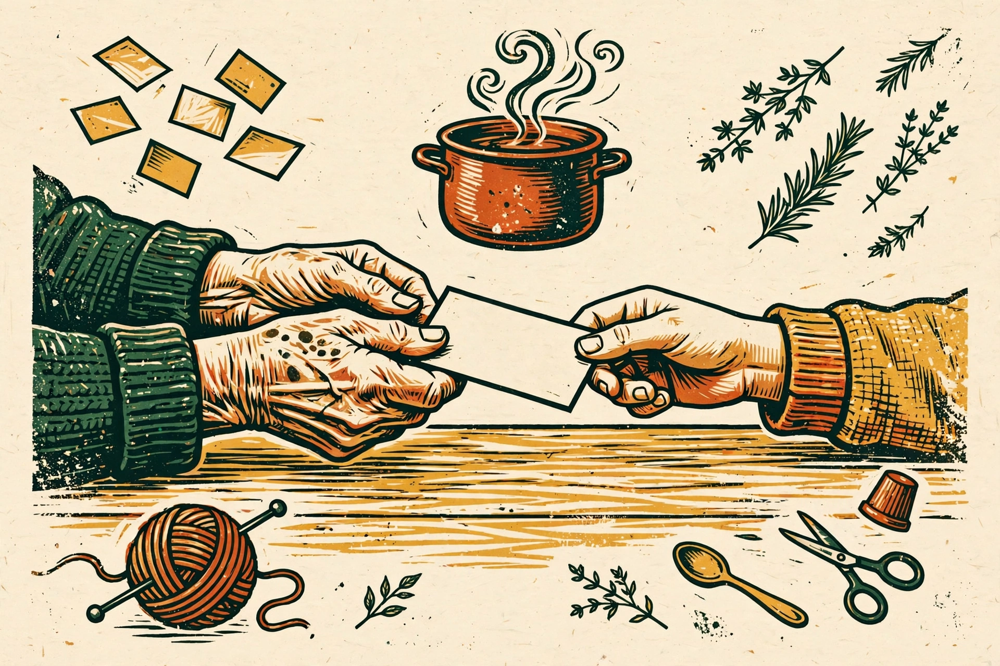
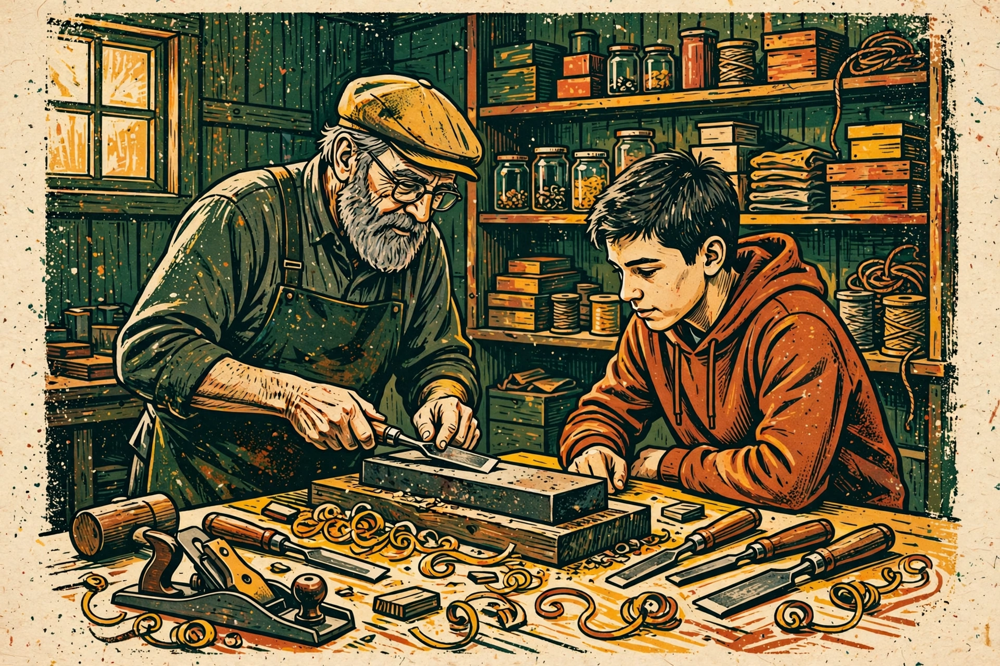

La tourtière : la cannelle et la pâte de la veille
Le tour de main qui change tout : une pincée de cannelle, et une pâte qui repose une nuit entière avant d'être roulée.
Le truc : « Pas plus qu'une pincée — sinon ça goûte le dessert. »
Un outil gratuit qui capte le savoir des gens avant qu'il disparaisse — les recettes d'une grand-mère, les trucs d'un artisan retraité, les histoires d'un quartier — et le rend transmissible, classé, cherchable.

Quelqu'un autour de toi sait quelque chose qui ne doit pas se perdre ? Écris-le ici, pendant que c'est frais : la fiche se fabrique tout de suite et entre dans la collection, juste en dessous.
Cherche un savoir, filtre par thème. Les fiches d'exemple montrent le format ; celles que tu captes s'ajoutent ici même, sur ton appareil. Essaie « cannelle », « bois » ou « sirop ».
Le tour de main qui change tout : une pincée de cannelle, et une pâte qui repose une nuit entière avant d'être roulée.
Le truc : « Pas plus qu'une pincée — sinon ça goûte le dessert. »
L'angle, la pression, et surtout le son : un ciseau bien affûté « chante » sur la pierre. Un geste qui ne s'apprend que les yeux fermés, en écoutant.
Le truc : si la lame bleuit, c'est déjà trop tard — on recommence à l'eau froide.
Le crédit « sur le bras », la clochette de la porte, les bonbons à une cenne. La mémoire d'un commerce qui était le cœur du quartier.
À retenir : « Ici, on ne vendait pas juste du lait. On vendait du “comment ça va”. »
Ni le calendrier ni le thermomètre ne décident : c'est le va-et-vient gel-dégel, lu dans les bourgeons et dans le vent du soir.
Le truc : « Quand les nuits gèlent franc et que les jours sentent le printemps, pars-la. »
La maille tombée se rattrape au crochet, rang par rang, sans défaire l'ouvrage. Dix minutes de patience contre des heures de travail sauvées.
Le truc : toujours rattraper la maille de bas en haut, jamais l'inverse.
Choisir le greffon en plein hiver, tailler en biseau franc, et sceller à la cire. Un vieil arbre fatigué peut refaire des pommes trois ans plus tard.
Le truc : le cambium contre le cambium — « peau contre peau, comme une poignée de main ».
On poussait les meubles, quelqu'un sortait le violon, les histoires partaient jusqu'à minuit. Une façon d'habiter le temps qui a presque disparu.
À retenir : « On n'avait rien, pis on manquait de rien. On avait les voisins. »
Pas de balance : la pâte est prête quand elle « répond » sous la main, souple et tiède. La température de la cuisine fait partie de la recette.
Le truc : l'eau doit être « comme un bain de bébé » — tiède, jamais chaude.
Aucune fiche ne correspond à cette recherche — dans la vraie collection, ce serait un savoir de plus à aller capter.
Fiches fictives, écrites pour montrer le format. La vraie collection serait faite de vraies personnes, avec leur consentement.

Transmettre, c'est aussi outiller : les outils web gratuits d'HP servent au quotidien, les savoirs se racontent dans les livres HP, et derrière tout ça, il y a un homme, à Terrebonne.